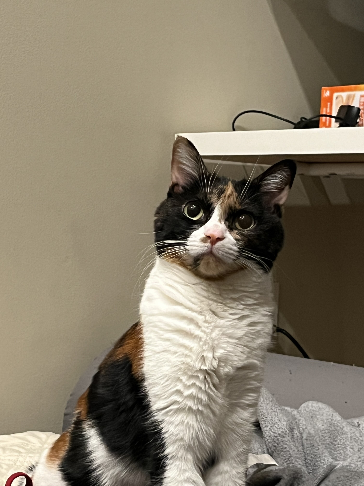
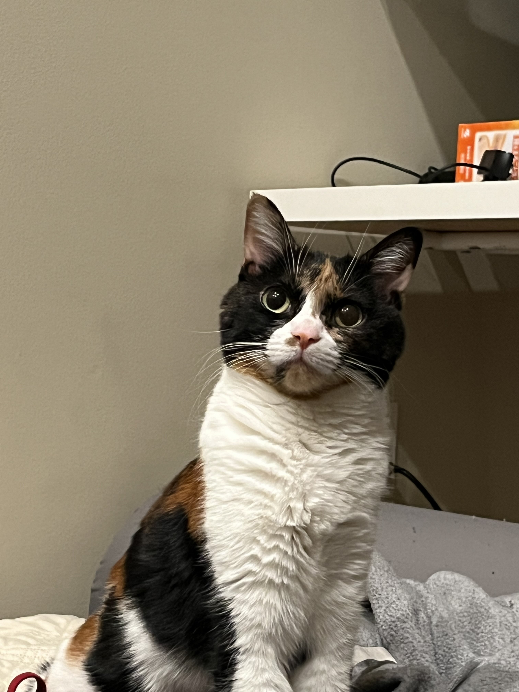
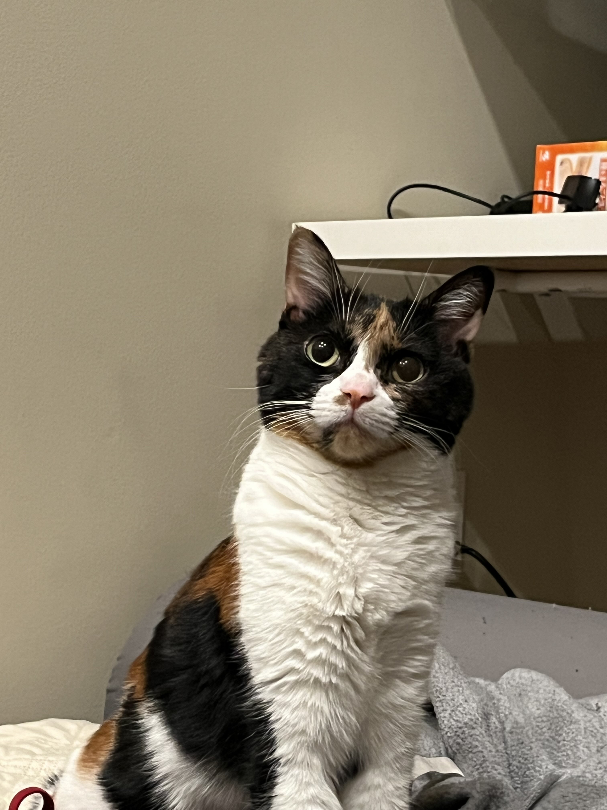

Meet: Patti Wang
 

Zora Zhiruo Wang is a PhD student at Carnegie Mellon University, Language Technologies Institute, advised by Professors Graham Neubig and Daniel Fried. Her research focuses on using programmatic approaches to solve real-world problems, especially those related to human occupations such as data analysis and software engineering. Zora has organized two workshops about Deep Learning for Code at ICLR and NeurIPS, and the first Agent Workshop at CMU. She also gave a tutorial about LLMs for tabular data at SIGIR 2024, and LLM-based agents at the second CMU Agent Workshop. She has presented her work at and served as reviewers for top-tier NLP/ML conferences including NeurIPS, ICLR, ACL, EMNLP, and KDD. She has been recognized with Google PhD Fellowship and CMU Presidential Fellowship.
My name in Chinese is 王芷若, which reads as Wang, Zhiruo. It is usually hard for non-native speakers to pronounce, so you can also call me Zora (as ZR is similar to Zhi Ruo).
I love my name, especially in Chinese characters, since it has a more beautiful meaning than in English alphabets. 芷 stands for 白芷 (Angelica dahurica) and 若 stands for 杜若 (Pollia japonica), which are two kinds of Chinese herbal medicine. Also, 芷若 is a beautiful vanilla 🌿
